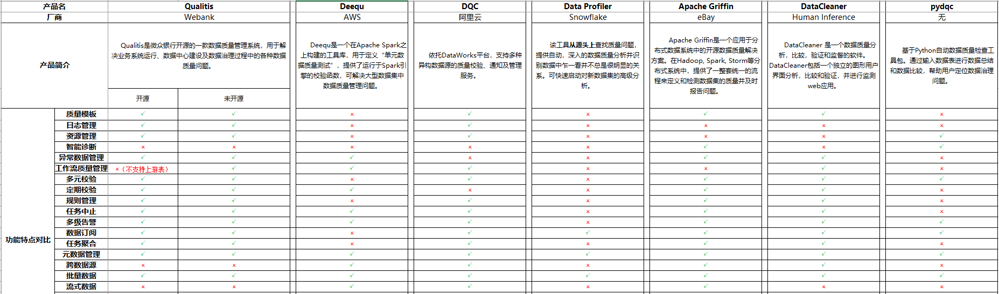

Data Quality Monitor
Posted on 2021-01-18 10:00 in Data
数据质量监控
目前数据质量监控有很多开源项目，很多都是配合大数据来进行数据质量管控的

Hadoop 安装
单机模式（Local (Standalone) Mode）：Hadoop的默认模式，0配置。Hadoop运行在一个Java进程中，使用本地文件系统，不使用HDFS，一般用于开发调试MapReduce程序的应用逻辑。
伪分布式模式（Pseudo-Distributed Mode）：需简单配置，相当于只有一个节点的集群，Hadoop的所有守护进程运行在同一台机器上。该模式在单机模式之上增加了代码调试功能，允许你检查内存使用情况，HDFS输入输出，以及其他的守护进程交互。
完全分布式模式（Fully-Distributed Mode）：根据需要进行配置。多节点，一般用于生产环境，可认为是由伪分布式模式的一个节点变为多个节点。
单机模式安装很简单，解压之后配置一下环境变量就行，参考
伪分布式安装，参考
需要编辑 $HADOOP_HOME/etc/hadoop/core-site.xml 和 $HADOOP_HOME/etc/hadoop/hdfs-site.xml
SSH 免密码登录，参考
cd ~/.ssh
ssh-keygen -t rsa
cp id_rsa.pub authorized_keys
chmod 600 authorized_keys
ssh-agent bash
ssh-add
hive 安装
https://blog.csdn.net/Kohang/article/details/79048931
需要编辑 conf/hive-env.sh conf/hive-site.xml
spark 安装
下载 spark-2.4.7-bin-without-hadoop-scala-2.12
DSS
注意：安装的服务器内存至少需要10G以上，否则一些服务会出现启动失败